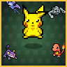

A deep collectible card game with a full deckbuilder, run modes, and 3D matches against the AI. Every mechanic, hand-built.
Explore the web-native RPG world — Kanto, Johto, and Hoenn, right in your browser.
A poker roguelike: build hands, collect jokers, beat the blinds. Friends can watch live.

Survive the Pokémon hordes with your partner — evolve your moves, fill your collection.
Based on PokéSurvivor by JPTER78
A memory card game — find the fruit pairs, mind your hearts, and buy charms between levels. Friends can watch live.
Isometric tactics with Pokémon figurines — Disgaea's turns, Geo Panels and throws, a campaign and an endless dungeon. Friends can watch live.
Pokémon TCG Pocket for 2 to 4 players — two Active Pokémon each, the video games' type chart, and attacks resolved together with Execute.
A single-deck dungeon crawler — clear dungeon after dungeon with 1 less max HP each time. Friends can watch live.
Chess reimagined with creatures — capture battles decided by stats.
Every friend playing live in any game, TV mode, and your replays from every game.
No save needed — you're lent a team of rental creatures. Win battles back-to-back for BP.
Browse every card you've opened, gallery-style.
See the Pokémon in your party and PC boxes from the Overworld.
Everything you own in every game: stars, cards, packs, currencies, items and Pokémon. Trade with friends.
How to play Battlecards — turns, combat, lands, classes, and every keyword.
Patch notes and every new card release from the game's history.
The living design bible — mechanics, keywords, and the world's lore.
Owner tools — the design-change inbox filed from the wiki's card pages.
Owner tools — bug reports filed by the playtesters.
Playtesters — tell Michael what broke.
Owner tools — reframe or replace card art on the live renderers.
Owner tools — change which track or sound plays anywhere in any game.
Owner tools — every fakemon, where it is placed, and a box to put another Pokémon there.
Owner tools — size and position battle sprites in a live battle scene.
Owner tools — a blank grass arena to walk and cycle through every follower sprite.
Owner tools — paint tiles, collision and elevation straight onto the overworld maps.
Owner tools — wipe the Pokémon save and replay the intro from the region picker. Battlecards is untouched.